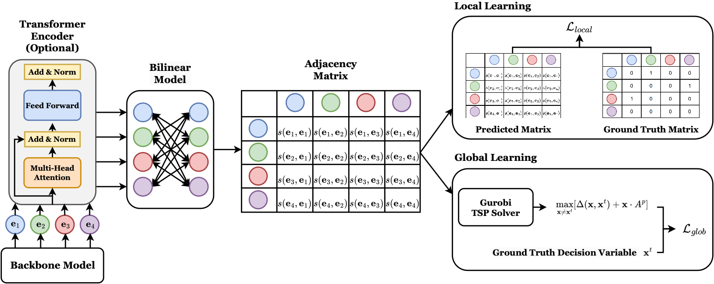
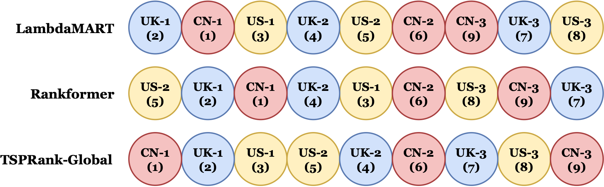
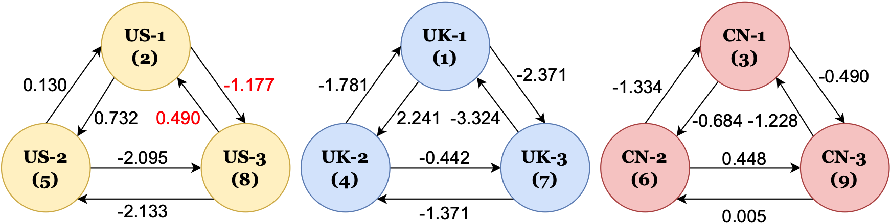

Pairwise scoring
A trainable bilinear layer scores ordered entity pairs after an optional Transformer encoder or domain backbone.
KDD 2025
University of Edinburgh · NVIDIA Research
TSPRank turns pairwise ranking scores into a globally optimized tour, combining the simplicity of pairwise comparison with the structure of listwise inference.

Traditional Learning-To-Rank methods often optimize either pairwise comparisons or entire lists, leaving a practical gap between robust pairwise modeling and globally coherent listwise inference. TSPRank bridges this gap by reframing ranking as a Travelling Salesman Problem. A bilinear model produces directed pairwise scores from backbone embeddings, and a solver then selects the ranking that maximizes the global tour score.
Experiments across stock ranking, information retrieval, and historical event ordering show that TSPRank can serve as a general ranking component on top of existing embeddings. Qualitative analysis further suggests that the solver improves the use of global information and provides tolerance to local pairwise errors.
The model keeps the scoring interface simple: encode entities, score directed edges, then solve for the best ordering.
A trainable bilinear layer scores ordered entity pairs after an optional Transformer encoder or domain backbone.
Pairwise scores form a directed adjacency matrix, making the ranking problem explicit as graph optimization.
TSP decoding selects a globally coherent route through all entities rather than independent local decisions.
TSPRank was evaluated across tabular, retrieval, and textual ordering tasks.
TSPRank-Global improves over LambdaMART at 0.0071 and Rankformer at 0.0110.
Top-10 retrieval setting with the strongest reported NDCG@10.
Historical event ordering at group size 30 using text-embedding-3-small.


@inproceedings{10.1145/3690624.3709234,
author = {Li, Weixian Waylon and Ziser, Yftah and Xie, Yifei and Cohen, Shay B. and Ma, Tiejun},
title = {TSPRank: Bridging Pairwise and Listwise Methods with a Bilinear Travelling Salesman Model},
year = {2025},
publisher = {Association for Computing Machinery},
doi = {10.1145/3690624.3709234},
booktitle = {Proceedings of the 31st ACM SIGKDD Conference on Knowledge Discovery and Data Mining V.1},
pages = {707--718},
series = {KDD '25}
}